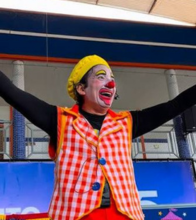
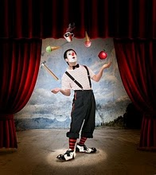
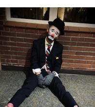
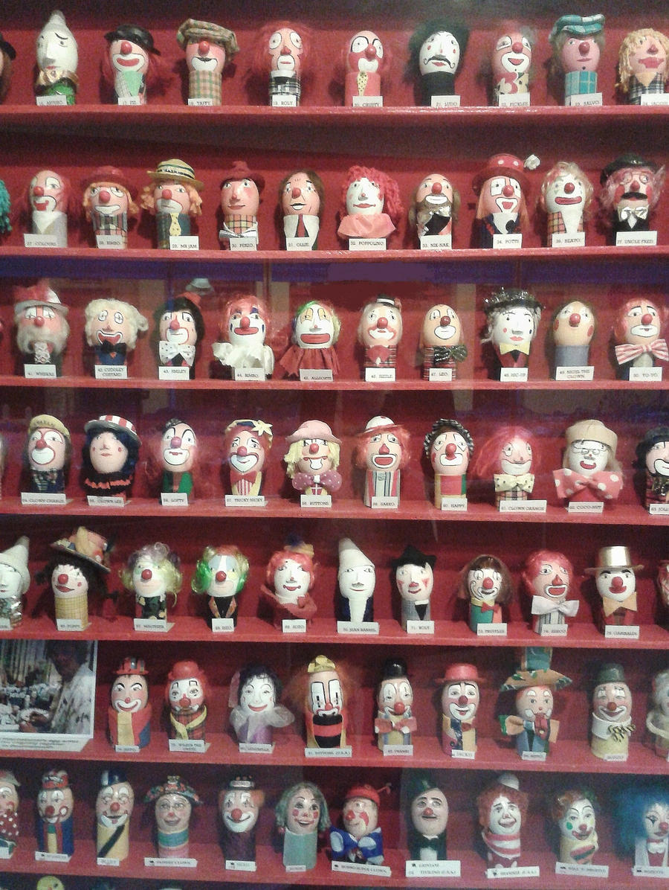

As Faces do Riso

Augusto
O coração do caos. Extravagante e desajeitado, é a pura expressão da liberdade infantil. Ele não segue regras, ele as tropeça.
"A alegria é a melhor maquiagem."
Clown Branco
A figura da autoridade e elegância. Com feições sérias e roupas brilhantes, é o contraponto perfeito para o Augusto.
"A disciplina é a alma do espetáculo."
Tramp (Vagabundo)
O poeta do picadeiro. Imortalizado por Chaplin, carrega uma melancolia doce e encontra esperança nas menores coisas.
"Um dia sem rir é um dia desperdiçado."O Segredo do Camarim
Você sabia que a maquiagem de cada palhaço tem direitos autorais? Na Europa, existe um registro oficial chamado Egg Register, onde os rostos dos palhaços são pintados em ovos de cerâmica. É a proteção definitiva de sua identidade visual!
